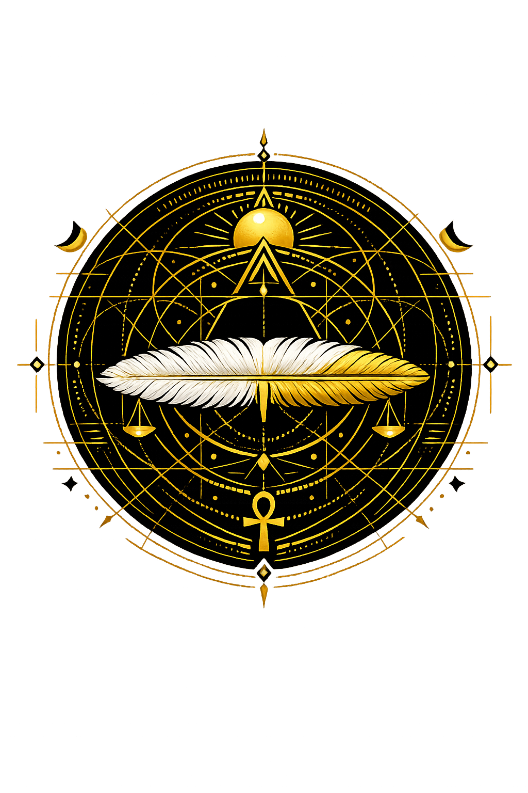

Ancient Domain
In the egyptian tradition, Mꜥ governed vision, perception, understanding. The name encodes a sphere of power that shaped ritual, narrative, and social order.
Extended Lore
Etymology · Phonology · Orthography · Cultural Legacy · Primary Sources

Essential information about Mꜥ, Vision, Perception, Understanding
From original script to Unicode restoration
Mꜥ is Tier 2 because its Unicode restoration preserves the orthographic signature appropriate to the egyptian tradition.
Character-by-character philological analysis
| Character | Unicode | Name | Block | Phonetic Role |
|---|---|---|---|---|
| M | U+004D | Latin Capital Letter M | Basic Latin | Same, capitalized |
| ꜥ | U+A725 | Latin Small Letter Egyptological Ain | Latin Extended-D | Ayin: voiced pharyngeal |
| — | N/A | Dropped character | Egyptian orthography | Dropped: vowel not written |
The Tier 2 classification reflects which ancient features stress, length, or script are preserved in this restoration.
From ancient cult to modern Unicode
In the egyptian tradition, Mꜥ governed vision, perception, understanding. The name encodes a sphere of power that shaped ritual, narrative, and social order.
Egyptian deities were syncretized with one another and, in the Greco-Roman period, with Greek and Roman gods; temple theology developed complex composite forms.
The name survives in Egyptological scholarship, museum collections, modern spirituality, and the global fascination with Pharaonic civilization. Restoring Mꜥ in Unicode preserves the name's cultural specificity against the flattening force of plain ASCII. The concept of Maa as right perception influenced later Egyptian ethics and found echoes in Greek philosophy's emphasis on reason and cosmic order. The Unicode restoration preserves a word that meant not merely 'truth' but the act of seeing straight. Restoring the name in Unicode preserves a concept for which no single English word—truth, justice, order, perception—is sufficient. In this sense, Maa is less a thing than a practice: the disciplined act of seeing the world as it truly is. Every royal ritual, from coronation to temple offering, was an enactment of Maa made visible.
Restoring Mꜥ in a domain name is more than orthographic accuracy. It is a statement that the internet should recognize the full range of human writing — not only the ASCII keyboard.
Common questions about Mꜥ, Vision, Perception, Understanding, and Unicode restoration
In reconstructed pronunciation, Mꜥ is /mꜥ/ — approximately 'maa' — the conventional spoken form..
Mꜥ means To see, to perceive, to understand. A core verb root, extremely common in texts in the egyptian tradition.
Mꜥ is associated with Sacred emblem (Iconographic marker associated with Mꜥ), Cult site (Sanctuary or holy place where Mꜥ was honoured), Ritual object (Material focus of devotion for Mꜥ), Ankh (Symbol of life and divine power).
Plain ASCII maa strips the stress, length, and script that make the name specific. Unicode restoration returns the name to its original written dignity.
The Middle Kingdom Instruction of Ptahhotep, attributed to a vizier of the Fifth Dynasty, is a manual for cultivating mꜥ in conduct. Its maxims advise the young official to listen, to reflect, and to “see” the good path before speaking. True speech, Ptahhotep insists, flows from a heart that has perceived Maat; false speech is the product of a clouded gaze. The text thus transforms mꜥ from a physical faculty into a moral discipline, the quality that distinguishes the wise man from the merely clever one.
The philological foundations of this restoration
Every claim on this page is grounded in established scholarship. The orthographic restorations follow disciplinary convention. The etymological chain follows the best available reference works. This is not invention — it is resurrection through scholarship.
You have traced the name from its earliest attestation to its Unicode restoration. Now return to the myth. The story is where the name lives.
Back to Lore